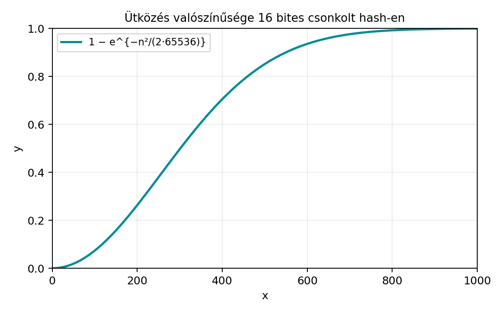
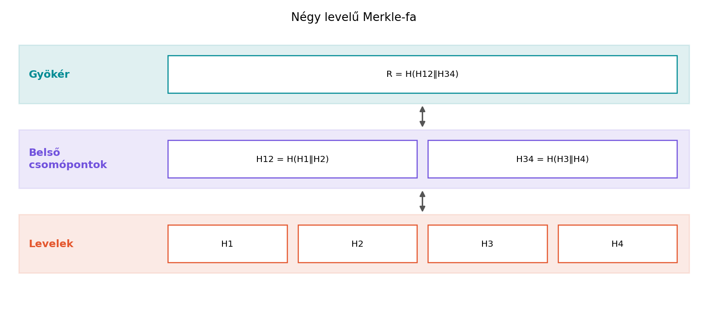

Képzeld el, hogy két különböző PDF-dokumentumot készítesz: az egyik egy ártalmatlan szerződés, a másik egy belső utasítás, amely átutalást kezdeményez. Ha mindkét fájlnak ugyanaz a hash-lenyomata, akkor a digitális aláírás, az integritás-ellenőrzés vagy a tartalomcímzés számára a két fájl megkülönböztethetetlenné válik. Egy ilyen ütközés (collision) önmagában nem jelenti azt, hogy a támadó egy adott fájlhoz tud másik fájlt gyártani; de ha a támadó mindkét fájlt ő maga készítheti, akkor a hash-függvény biztonsága összeomlik.
A hash-függvényeknek a gyakorlatban éppen ezért van egy finomabb biztonsági követelményük: ütközésellenállásnak nevezzük, ha a támadó nem tud hatékonyan két különböző üzenetet találni, amelyek lenyomata megegyezik. Az előző alfejezetben (A hash-függvény és biztonsági tulajdonságai) láttuk, hogy ez erősebb, mint a második előkép-ellenállás, és sokkal erősebb, mint a sima előkép-ellenállás. Most azt vizsgáljuk, hogy milyen általános támadás létezik az ütközésellenállás ellen, és hogyan bukott el két híres hash-függvény, az MD5 és a SHA-1.
A Diszkrét valószínűség és a születésnapi paradoxon alfejezetben levezettük, hogy ha születésnap lehetséges, akkor véletlen mintavétel után már körülbelül az ütközés valószínűsége. Ugyanez igaz a hash-lenyomatokra: ha kimenete bites, akkor a lehetséges lenyomatok száma , és a születésnapi korlát szerint a támadónak csupán
véletlen üzenet hash-elésére van szüksége ahhoz, hogy jó eséllyel két azonos lenyomatú üzenetet találjon. Ezt születésnapi támadásnak (birthday attack) nevezzük.
Példa. Egy 40 bites csonkolt hash-függvény ellen üzenet hash-elése után az ütközés valószínűsége kb. (); -hoz üzenet kell. Ez néhány másodperc egy átlagos laptopon. Egy 64 bites hash esetén a küszöb milliárd, ami szintén nem lehetetlen, míg egy 128 bites hash esetén műveletről beszélünk, ami a mai technológiával már a „nagyon nehéz” kategóriába tartozik. Ezért a modern hash-függvények kimenete legalább 256 bit, ahol a születésnapi korlát .

Az ábrán jól látszik, hogy már néhány száz üzenetnél meredeken emelkedik az ütközés valószínűsége 16 bites kimenet esetén. A gyakorlati szabály tehát: a hash-hosszt úgy kell méretezni, hogy művelet is messze a támadó elérhetősége felett legyen.
A születésnapi támadás naiv megvalósítása táblát használ:
Algoritmus (táblás ütközéskeresés). 1. Generáljunk véletlen üzeneteket. 2. Minden üzenetre számítsuk ki -et. 3. Tároljuk a párt egy hash-táblában. 4. Ha az új már szerepel a táblában egy korábbi üzenettel, és , akkor megtaláltuk az ütközést.
Ez a módszer nagyon gyors, de memóriaigénye ; 40 bitnél ez még kényelmes, de 80 bitnél már kb. bejegyzésről, azaz bejegyzésenként 16 bájttal számolva mintegy 18 terabájtról beszélnénk. A memóriaigény csökkentésére alkalmazhatjuk a rho-módszert, amely Floyd ciklusdetektálásán alapul, és lényegében állandó memóriát használ.
A rho-módszer mögötti megfigyelés: ha kimenete bites, akkor tekinthetjük a leképezést, például módon. Mivel a definíciós tartomány véges, az sorozat előbb-utóbb ciklusba fut. Ha a ciklusba belépő pontnak két különböző őse van – egy a „farokból”, egy a ciklusból –, akkor azok ősei ütközést adnak -re, tehát -ra is. A Floyd-ciklusdetektálás két mutatóval ( és ) felismeri a ciklust, majd megkeresi a belépési pontot.
Algoritmus (rho ütközéskeresés Floyd-ciklussal). 1. Válasszunk egy véletlen kezdőértéket a térből. 2. Legyen . 3. Indítsunk két mutatót: (teknős) és (nyúl). 4. Lépésenként: , , amíg nem lesz. 5. Állítsuk vissza -t -ra, és lépjünk mindkét mutatóval egyszerre (, ), amíg újra egyenlők nem lesznek. Ez a pont a ciklus belépési pontja. 6. Keressük meg a belépési pont két elődjét: egyet a farokból, egyet a ciklusból. Ha különböznek, akkor -ra ütközést találtunk.
A módszer memóriaigénye , futásideje pedig továbbra is várhatóan . Ez a ciklusdetektálási technika később visszatér a Pollard-rho a diszkrét logaritmusra és a Faktorizációs algoritmusok: Fermat, Pollard p − 1 és rho alfejezetekben.
Továbbvitt eredmény. A Floyd-ciklusdetektálást és a rho-ötletet használjuk a diszkrét logaritmus Pollard-rho algoritmusában és a Pollard-rho faktorizációban.
Az MD5-öt 1992-ben publikálták, és évtizedekig széles körben használták. A 2000-es évek elején megjelentek az első elméleti gyengeségek, majd 2004-ben Wang és munkatársai gyakorlatilag is bemutattak egy ütközést: két különböző, rövid üzenet, amelyeknek az MD5-lenyomata megegyezett. Az ilyen ütközést azonos előtagú ütközésnek (identical-prefix collision) nevezzük: a két üzenet ugyanazzal a (tetszőleges) előtaggal kezdődik, és csak a támadó által kiszámított néhány ütköző blokkban tér el: ; a Merkle–Damgård-szerkezet miatt ezután bármilyen közös utótag hozzáfűzhető.
A gyakorlatban sokkal veszélyesebb a választott előtagú ütközés (chosen-prefix collision). Itt a támadó két tetszőleges, általa választott előtagból indul ki – például két különböző tanúsítvány-mezőből –, és mindkettőhöz kiszámít egy-egy utótagot úgy, hogy a teljes üzenetek MD5-lenyomata megegyezzék. Ezzel a támadó két olyan dokumentumot hozhat létre, amelyeknek a tartalma a támadó szándéka szerint különbözik, mégis azonos a lenyomatuk.
A választott előtagú ütközés erejét mutatja a 2008-as eset: kutatók
egy valódi hitelesítésszolgáltató által aláírt tanúsítvány-kérelmet
használtak ki. A CA az egyik változatot írta alá, de mivel a másik
változatnak ugyanaz volt az MD5-lenyomata, az aláírás a másik
tanúsítványra is érvényes lett. Így sikerült egy olyan tanúsítványt
előállítani, amelyben a CA=TRUE jelzés szerepelt, vagyis a
támadó saját maga is hitelesítésszolgáltatóvá vált. Ez a támadás aláássa
a teljes Tanúsítványlánc, hitelesítésszolgáltatók
és visszavonás alfejezetben tárgyalt bizalmi modellt.
A Flame nevű kártevő 2012 körül ugyanezt a technikát használta: egy Microsoft által aláírt frissítési csatornán keresztül terjesztett hamis Windows-frissítéseket. A támadás kulcsa az volt, hogy a Microsoft egyes szolgáltatásai még MD5-öt használtak a tanúsítványokban, így a választott előtagú ütközés elegendő volt ahhoz, hogy a támadó a Microsoft nevében aláírt kódot futtasson.
Támadás. A választott előtagú ütközés elleni védekezés nem az, hogy „majd ellenőrizzük a fájl tartalmát”, hanem az, hogy egyáltalán nem szabad ütközésre érzékeny hash-függvényt használni. Ha a hash-függvény ütközésellenállása megtört, akkor a digitális aláírás hash-and-sign szerkezete is sérül, mert a támadó két különböző üzenetet készíthet ugyanazzal a lenyomattal.
A SHA-1 160 bites kimenetű, tehát a születésnapi korlát elvileg művelet. A 2000-es évek közepén megjelentek elméleti támadások, amelyek ennél lényegesen kisebb munkával ígértek ütközést. 2017-ben a SHAttered projekt bemutatta az első gyakorlati azonos előtagú SHA-1-ütközést: két különböző PDF-fájl, amelyeknek az SHA-1-lenyomata megegyezett. A támadás költsége a publikáció szerint nagyságrendileg SHA-1-művelet volt, ami nagy erőforrást igényelt, de már megvalósíthatónak bizonyult.
2020-ban kutatók (Leurent és Peyrin) egy választott előtagú SHA-1-ütközést is bemutattak. Ez még veszélyesebb, mert lehetővé teszi, hogy a támadó két tetszőleges előtagból induljon ki, és azonos lenyomatú dokumentumokat készítsen. A becsült költség itt is nagyságrendű volt, de a számítási kapacitás folyamatosan növekszik.
A gyakorlati következmény: a SHA-1 kivezetése a tanúsítványokból már a SHAttered előtt megindult (a CA/Browser Forum 2016-tól tiltotta az új SHA-1-es TLS-tanúsítványokat, a böngészők 2017 elejére elutasították őket; a SHAttered ezt a döntést utólag igazolta; az évszámok ellenőrizendők). A Git verziókezelő rendszer hosszú ideig SHA-1-et használt az objektumok azonosítására, és bár a támadás költsége még magas volt, a fejlesztők elindították a migrációt SHA-256-ra. Ez a migráció nem csupán a hash-függvény cseréjét jelenti, hanem a teljes tárolási formátum, a protokoll és a kompatibilitás átalakítását.
A hash-függvények nemcsak egyetlen üzenet lenyomatát adhatják, hanem nagy adathalmazok tömör, ellenőrizhető kivonatát is. A Merkle-fa egy bináris fa, amelynek levelei az egyes adatblokkok hash-ei, minden belső csomópontja pedig a két gyermeke hash-ének konkatenációjából számított hash:
A gyökérhash (root hash) így az összes levélhez kötődik. Ha egy levél tartalma megváltozik, az egész fa gyökere megváltozik. A Merkle-fa előnye, hogy egy adott levél tagságát anélkül tudjuk bizonyítani, hogy az összes többi levelet megosztanánk.

A tagságbizonyítás (membership proof) során a levél indexéből meghatározzuk az útvonalat a gyökérig, és az útvonalon lévő testvér-csomópontok hash-eit adjuk át. Az ellenőrző újraszámolja az útvonal hash-eit, és összehasonlítja a gyökérrel.
Példa. Legyen négy levelünk: . A gyökér . Ha valaki be akarja bizonyítani, hogy szerepel a fában, elküldi -at és a testvér-útvonalat: -et és -t. Az ellenőrző kiszámolja , majd , és ellenőrzi, hogy megegyezik-e a nyilvántartott gyökérrel. A bizonyítás mérete , nem pedig .
Továbbvitt eredmény. A Merkle-fát használjuk a Certificate Transparency és a Web PKI kudarcai alfejezetben a tanúsítványnaplók tömör ellenőrzésére, valamint a Hash-alapú aláírások: Lamport, Merkle, XMSS, SLH-DSA alfejezetben az egyszer használatos aláírási kulcsok összefoglalására.
A Git verziókezelő rendszer az egyik legnagyobb, mindennapos hash-alkalmazás. A Git minden objektumot – fájltartalom (blob), könyvtárlista (tree), commit – a tartalma SHA-1 (újabban SHA-256) hash-ével azonosít. Ezt tartalomcímzésnek (content addressing) nevezzük: ugyanaz a tartalom mindig ugyanazt az azonosítót kapja, és a tárolás, a deduplikáció, valamint az integritás-ellenőrzés egységesen kezelhető.
A tartalomcímzés szépsége, hogy a hash nemcsak címke, hanem integritásvédő is: ha valaki megváltoztatja a fájlt, a hash megváltozik, és a hivatkozó commit már nem fog rá illeszkedni. A Git azonban hosszú időn át SHA-1-et használt, amelynek ütközésellenállása megtört. Bár a SHA-1 ütközés ma még költséges, a Git-projekt elindította az átmenetet a SHA-256-alapú objektumazonosítókra. Ez a váltás érinti a tároló formátumot, a hálózati protokollt és a kompatibilitást, ezért óvatosan, hosszú átmeneti idővel valósítják meg.
Az alábbi oktatási kód egy 16 bitesre csonkolt SHA-256-lenyomaton keres ütközést kétféleképpen: táblás módszerrel és Floyd-ciklusos rho-módszerrel. A cél a születésnapi korlát és a memória nélküli ciklusdetektálás szemléltetése; a kód nem éles használatra való.
# OKTATÁSI CÉLRA – NEM ÉLES HASZNÁLATRA
import hashlib, os
BITS = 16
MASK = (1 << BITS) - 1 # 16 bit: 0xffff
def h_trunc(data: bytes) -> int:
d = hashlib.sha256(data).digest()
return int.from_bytes(d[:2], 'big') # csonkolt 16 bites hash
def to_bytes(x: int) -> bytes:
return x.to_bytes((BITS + 7) // 8, 'big')
def f(x: int) -> int:
# n-bites értéket képez n-bites értékre: leképezés a rho-gráfhoz
return h_trunc(to_bytes(x) + b'|rho|')
def birthday_table(limit=20000):
seen = {}
for _ in range(limit):
m = os.urandom(4) # véletlen rövid üzenet
h = h_trunc(m)
if h in seen and seen[h] != m:
return m, seen[h], h
seen[h] = m
return None
def rho_collision(start: int):
tortoise = hare = start
while True:
tortoise = f(tortoise)
hare = f(f(hare))
if tortoise == hare:
break
# ciklusbelépési pont megkeresése
tortoise = start
while tortoise != hare:
tortoise = f(tortoise)
hare = f(hare)
entry = tortoise
# előd a farokból
x = start
while f(x) != entry:
x = f(x)
tail_pre = x
# előd a ciklusból
y = entry
while f(y) != entry:
y = f(y)
cycle_pre = y
if tail_pre != cycle_pre:
return tail_pre, cycle_pre, entry
return None
print("Táblás ütközéskeresés:")
res = birthday_table()
if res:
a, b, h = res
print(f"ütközés: H({a!r}) == H({b!r}) == {h:04x}")
print(f"a két bemenet különböző: {a != b}")
print("Rho ütközéskeresés:")
for start in [1, 2, 3, 42, 12345]:
pair = rho_collision(start)
if pair:
a, b, h = pair
print(f"ütközés: f({a}) == f({b}) == {h:04x}")
print(f"a két bemenet különböző: {a != b}")
breakA kimenet véletlenszerű 16 bites lenyomatokat tartalmaz, ezért a
konkrét hexadecimális értékek nem rögzíthetők, de a két
print-ben megjelenő ütközés ellenőrizhető: mindkét módszer
két különböző bemenetet mutat, amelyek ugyanarra a 16 bites értékre
képződnek. A táblás módszer gyors, de tárol, a rho-módszer pedig szinte
semmilyen memóriát nem használ.
A webes PKI-ban a tanúsítványokat a hitelesítésszolgáltatók aláírják. A modern tanúsítványok SHA-256-tal készült aláírást használnak, de korábban sok CA SHA-1-et vagy MD5-öt alkalmazott. A választott előtagú MD5-ütközés 2008-as demonstrációja után világossá vált, hogy az MD5-öt azonnal ki kell vezetni. A SHA-1 esetében a 2017-es SHAttered és a 2020-as választott előtagú ütközés bebizonyította, hogy a SHA-1 sem alkalmas biztonsági hash-nek. A böngészők először figyelmeztetéseket jelenítettek meg, majd elutasították az SHA-1 aláírású tanúsítványokat (ez a folyamat a SHAttered előtt kezdődött, és a SHAttered utólag igazolta).
A Git esetében a SHA-1 ütközés veszélye kisebb, mert a Git nem aláírásként, hanem tartalomcímként használja a hash-t, és a kockázat az, hogy egy támadó két ütköző fájlt készít, az ártalmatlant elfogadtatja, majd a másikkal cseréli; a Git ezért ütközésdetektáló SHA-1-implementációt (SHA-1DC) használ, és hosszú távon SHA-256-ra áll át (ellenőrizendő). Ennek ellenére a Git-projekt is elindította az SHA-256-ra való átállást, mert a hosszú távú biztonság érdekében a kriptográfiai hash-ek ütközésellenállásának meg kell maradnia.
A válaszok a feladatok után, a ### Megoldások részben
találhatók.
1. feladat (A). Számítsd ki a születésnapi küszöböt (50% valószínűséghez) 64 és 80 bites hash-kimenetekre. Adj közelítő értéket a képlet alapján.
2. feladat (A). Definiáld formálisan a hash-függvény ütközésellenállását, és magyarázd el, miért nem következik belőle az előkép-ellenállás.
3. feladat (B). Tegyük fel, hogy egy 4 bites hash-függvény a következő lenyomatokat adja az üzenetekre: , , , , . Keresd meg az összes ütközést. Hány üzenet kell ahhoz, hogy a születésnapi paradoxon alapján 16 lehetséges lenyomat esetén körüli legyen az ütközés valószínűsége?
4. feladat (B). Írj Python-függvényt, amely egy 4
levelű Merkle-fa tagságbizonyítását ellenőrzi. A függvény kapja meg a
levelet, a bizonyítási útvonalat és a gyökeret, és True
értéket adjon, ha a levél valóban a fában van. (Használd a
hashlib.sha256-ot; az oktatási jelleg miatt a kimenet
rövid.)
5. feladat (C). Bizonyítsd be, hogy ha a Merkle-fa belső csomópontjait módon számítjuk, és a hash-függvény ütközésellenálló, akkor a tagságbizonyítás hamisítása legalább olyan nehéz, mint egy ütközés találása. Fogalmazd meg a redukciót: ha egy támadó hamis tagságbizonyítást tud gyártani, akkor hogyan lehet abból -ütközést kinyerni?
6. feladat (D). Tervezz egy játék CA-rendszert,
amely MD5-öt használ a tanúsítványok aláírására. A CA a
tanúsítvány-kérelem hash-ét írja alá. Mutasd meg, hogy ha a támadó
választott előtagú MD5-ütközést tud generálni, akkor hamis tanúsítványt
tud előállítani saját nyilvános kulccsal és CA=TRUE
mezővel. Írd le a támadás lépéseit, és javasold a védekezést.
A születésnapi küszöb , ha a hash kimenete bites. 64 bitnél üzenet; 80 bitnél üzenet.
Ütközésellenállás: minden hatékony támadóra a valószínűség elhanyagolható. Az előkép-ellenállás azt mondja, hogy adott lenyomathoz nehéz -et találni, amelyre . Ütközésellenállásból nem következik előkép-ellenállás. Ellenpélda: legyen ütközésellenálló, bites kimenetű, és , ha , egyébként . Két különböző bemenet csak akkor ütközhet, ha mindkettő a második ágba esik, ekkor viszont -ütközést adnak, tehát ütközésellenálló. Ugyanakkor minden alakú kimenethez az őskép azonnal leolvasható (), és a kimenetek fele ilyen, így nem ősképellenálló.
Az ütközések: és (mindkettő ), valamint és (mindkettő ). A születésnapi küszöb esetén , tehát körülbelül 5 üzenet elegendő.
# OKTATÁSI CÉLRA – NEM ÉLES HASZNÁLATRA
import hashlib
def H(left, right=b""):
return hashlib.sha256(left + right).digest()
def verify_leaf(root, leaf_hash, proof, index):
# proof: testvérek alulról felfelé
h = leaf_hash
for p in proof:
if index % 2 == 0:
h = H(h, p)
else:
h = H(p, h)
index //= 2
return h == rootPélda: levelhashek h1,h2,h3,h4,
root = H(H(h1,h2), H(h3,h4)). A
verify_leaf(root, h3, [h4, H(h1,h2)], 2)
True-t ad.
Legyen a valódi útvonal csomópontjai
,
a hamis bizonyításból számoltak
(azonos
mélység, az ellenőrző ezt ellenőrzi). Mivel
és
,
van legkisebb
,
amelyre
,
de
.
Ekkor
és
két különböző bemenet ugyanarra a kimenetre:
-ütközés.
Tehát ha
ütközésellenálló, akkor hamis bizonyítás csak elhanyagolható
valószínűséggel létezik. Megjegyzés. A rögzített
mélység és a tartományelválasztás elengedhetetlen: a gyakorlatban a
levél- és a belső csomópont hash-ét eltérő előtaggal (pl.
0x00, 0x01) számoljuk, hogy egy belső
csomópont ne legyen levélként bemutatható (így jár el a Certificate
Transparency is, RFC 6962).
Lépések: 1. A támadó két tanúsítványvázat készít: az egyik egy
ártalmatlan domainre szól, a másikban CA=TRUE és a támadó
nyilvános kulcsa szerepel. 2. A támadó választott előtagú MD5-ütközést
generál: talál két utótagot, amelyekkel a két váz MD5-lenyomata
megegyezik. 3. Beküldi az ártalmatlan vázat a CA-nak aláírásra. A CA
kiszámítja az MD5-lenyomatot, és aláírja. 4. Mivel a másik tanúsítvány
lenyomata ugyanaz, a CA aláírása a másik tanúsítványra is érvényes. 5. A
támadó így rendelkezik egy érvényes aláírással egy olyan tanúsítványon,
amely CA-ként azonosítja őt.
Védekezés: ne használjunk MD5-öt; alkalmazzunk SHA-256-ot vagy SHA-3-at; a tanúsítványkibocsátók ellenőrizzék a kérelem összes mezőjét, és használjanak ütközésellenálló hash-függvényt.
A születésnapi támadás a hash-függvények ütközésellenállásának univerzális korlátja: -bites kimenetnél művelet elegendő két azonos lenyomatú üzenet találásához. A táblás keresés egyszerű, de memóriaigényes; a Floyd-ciklusos rho-módszer memóriával is megtalálja az ütközést. Az MD5 és a SHA-1 ütközésellenállása megtört: a választott előtagú ütközés lehetővé teszi hamis tanúsítványok és aláírt kódok készítését, ezért mindkét hash-függvényt kivezették a biztonsági alkalmazásokból. A Merkle-fa nagy adathalmazok tömör, logaritmikus méretű tagságbizonyítását teszi lehetővé, és alapja a Certificate Transparencynek, valamint a hash-alapú aláírásoknak. A Git tartalomcímzése szemlélteti, hogyan válik a hash azonosítóvá és integritásvédővé egyszerre. Továbbvitt eredmény: a rho-ciklusdetektálást a Pollard-rho a diszkrét logaritmusra és a Faktorizációs algoritmusok: Fermat, Pollard p − 1 és rho alfejezetek, a Merkle-fát a Certificate Transparency és a Web PKI kudarcai és a Hash-alapú aláírások: Lamport, Merkle, XMSS, SLH-DSA, a választott előtagú ütközést pedig a Tanúsítványlánc, hitelesítésszolgáltatók és visszavonás alfejezet használja.
Az alfejezet klasszikus kriptográfiai eredményekre épít: a születésnapi paradoxont a Diszkrét valószínűség és a születésnapi paradoxon alfejezetben bizonyítottuk. Az MD5 és SHA-1 ütközések, valamint a 2008-as hamis CA és a Flame incidens a nyilvános kriptográfiai szakirodalomból ismertek; a pontos évszámok és költségbecslések a hivatkozott publikációkban ellenőrizhetők. A NIST FIPS 180-4 és FIPS 202 szabványok a fejezet elején megadott források. A Git SHA-256 migrációja folyamatban lévő projekt, ezért annak állapota időben változhat.